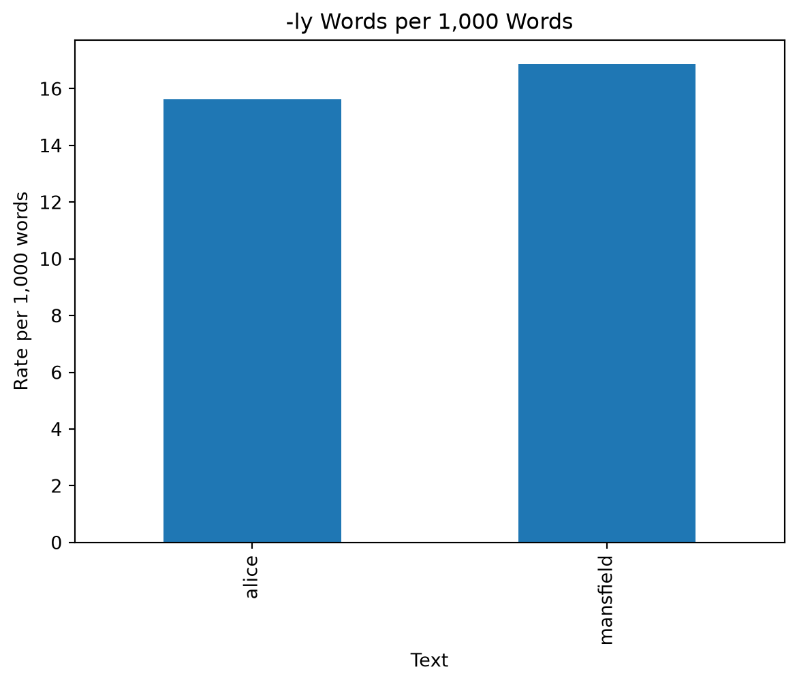
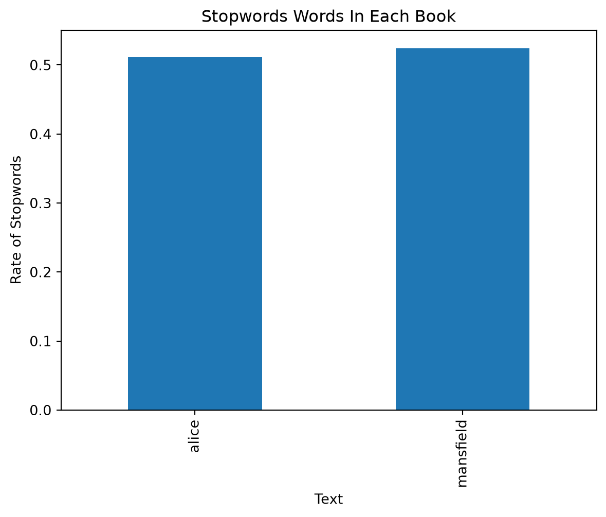
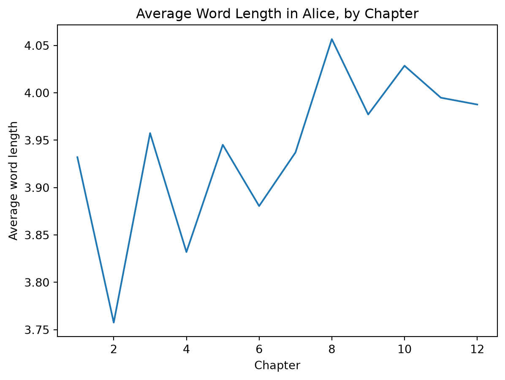

import re
import pandas as pd
# Stopwords (from Day 18)
stopwords = ["the", "to", "and", "of", "a", "her", "i", "in", "was", "it",
"she", "he", "be", "that", "you", "not", "had", "as", "his", "for",
"with", "is", "have", "but", "at", "so", "all", "my", "been", "him",
"on", "by", "could", "would", "very", "no", "what", "which", "they",
"were", "there", "me", "an", "must", "this", "said", "from", "or",
"will", "any", "much", "than", "such", "their", "them", "if", "do",
"did", "one", "when", "your", "more", "are", "we", "who", "up",
"out", "down", "into", "s", "t"]
# 1. Load Alice and cut off the Gutenberg header and footer
with open("../../data/gutenberg/alice.txt", "r", encoding="utf-8") as f:
alice_lines = f.readlines()
while not alice_lines[0].startswith("*** START"):
alice_lines = alice_lines[1:]
alice_lines = alice_lines[1:]
while not alice_lines[-1].startswith("*** END"):
alice_lines = alice_lines[:-1]
alice_lines = alice_lines[:-1]
alice_text = "".join(alice_lines)
# 2. Split into chapters (and drop everything before Chapter I)
chapters = re.split(r"\nCHAPTER [IVXL]+", alice_text)
chapters = chapters[1:]
# 3. One row per word, with its chapter
rows = []
chapter_num = 0
for chapter in chapters:
chapter_num += 1
words = re.split(r"[\W_]+", chapter.lower()) # split on \W AND on _
words = [w for w in words if w != ""]
for w in words:
rows.append({"word": w, "chapter": chapter_num})
alice_df = pd.DataFrame(rows)
# 4. Save it for next time
alice_df.to_csv("alice_words.csv", index=False, encoding="utf-8-sig")print(len(alice_df))
print(alice_df["chapter"].nunique())
print(alice_df.head())27312
12
word chapter
0 down 1
1 the 1
2 rabbit 1
3 hole 1
4 alice 1alice_df["word"].value_counts()
content = alice_df[~alice_df["word"].isin(stopwords)]
content["word"].value_counts().head(10)word
alice 397
little 128
then 94
about 94
know 87
like 85
went 83
again 83
herself 83
queen 75
Name: count, dtype: int64alice_df["chapter"].value_counts()
alice_df["chapter"].value_counts().sort_index()chapter
1 2193
2 2186
3 1739
4 2738
5 2243
6 2670
7 2385
8 2559
9 2364
10 2101
11 1945
12 2189
Name: count, dtype: int64ch1_content = alice_df[(alice_df["chapter"] == 1) & (~alice_df["word"].isin(stopwords))]
ch1_content["word"].value_counts().head(5)word
alice 28
little 15
way 13
herself 13
think 11
Name: count, dtype: int64#Where is the queen Arrives in Ch. 6 and takes over in Ch. 8
queen = alice_df[alice_df["word"] == "queen"]
queen["chapter"].value_counts().sort_index()chapter
6 4
7 2
8 36
9 14
11 9
12 10
Name: count, dtype: int64#Where is the cat Ch. 1-3, 6, 8
cat = alice_df[alice_df["word"] == "cat"]
cat["chapter"].value_counts().sort_index()chapter
1 1
2 1
3 2
6 22
8 11
Name: count, dtype: int64#Where is the hatter Ch. 6, 7, 11
hatter = alice_df[alice_df["word"] == "hatter"]
hatter["chapter"].value_counts().sort_index()chapter
6 2
7 33
11 21
Name: count, dtype: int64#How many -ly words in each chapter
ly_words = alice_df[alice_df["word"].str.endswith("ly")]
ly_words["chapter"].value_counts().sort_index()chapter
1 30
2 23
3 40
4 34
5 38
6 54
7 40
8 45
9 34
10 38
11 28
12 23
Name: count, dtype: int64#Where is the turtle and the gryphon Tutle - Ch. 9-12, Gryphon - Ch. 9,10,12
turtle = alice_df[alice_df["word"] == "turtle"]
turtle["chapter"].value_counts().sort_index()
gryphon = alice_df[alice_df["word"] == "gryphon"]
gryphon["chapter"].value_counts().sort_index()chapter
9 20
10 31
11 2
12 2
Name: count, dtype: int64queen_by_chapter = {}
for w, ch in zip(alice_df["word"], alice_df["chapter"]):
if w == "queen":
if ch in queen_by_chapter:
queen_by_chapter[ch] += 1
else:
queen_by_chapter[ch] = 1
print(queen_by_chapter)
alice_df[alice_df["word"] == "queen"]["chapter"].value_counts().sort_index(){6: 4, 7: 2, 8: 36, 9: 14, 11: 9, 12: 10}chapter
6 4
7 2
8 36
9 14
11 9
12 10
Name: count, dtype: int64alice_df["length"] = alice_df["word"].str.len()
alice_df.head()| word | chapter | length | |
|---|---|---|---|
| 0 | down | 1 | 4 |
| 1 | the | 1 | 3 |
| 2 | rabbit | 1 | 6 |
| 3 | hole | 1 | 4 |
| 4 | alice | 1 | 5 |
alice_df["length"] = [len(w) for w in alice_df["word"]]
alice_df.head()| word | chapter | length | |
|---|---|---|---|
| 0 | down | 1 | 4 |
| 1 | the | 1 | 3 |
| 2 | rabbit | 1 | 6 |
| 3 | hole | 1 | 4 |
| 4 | alice | 1 | 5 |
alice_df["is_ly"] = alice_df["word"].str.endswith("ly")
alice_df["is_stopword"] = alice_df["word"].isin(stopwords)
alice_df.head(10)| word | chapter | length | is_ly | is_stopword | |
|---|---|---|---|---|---|
| 0 | down | 1 | 4 | False | True |
| 1 | the | 1 | 3 | False | True |
| 2 | rabbit | 1 | 6 | False | False |
| 3 | hole | 1 | 4 | False | False |
| 4 | alice | 1 | 5 | False | False |
| 5 | was | 1 | 3 | False | True |
| 6 | beginning | 1 | 9 | False | False |
| 7 | to | 1 | 2 | False | True |
| 8 | get | 1 | 3 | False | False |
| 9 | very | 1 | 4 | False | True |
alice_df["text"] = "alice"
alice_df.head()| word | chapter | length | is_ly | is_stopword | text | |
|---|---|---|---|---|---|---|
| 0 | down | 1 | 4 | False | True | alice |
| 1 | the | 1 | 3 | False | True | alice |
| 2 | rabbit | 1 | 6 | False | False | alice |
| 3 | hole | 1 | 4 | False | False | alice |
| 4 | alice | 1 | 5 | False | False | alice |
tokens = len(alice_df)
types = alice_df["word"].nunique() # number of unique words
print(tokens, types, types / tokens)27312 2557 0.09362185120093731alice_df.sort_values("length", ascending=False).head(10)| word | chapter | length | is_ly | is_stopword | text | |
|---|---|---|---|---|---|---|
| 431 | disappointment | 1 | 14 | False | False | alice |
| 2916 | multiplication | 2 | 14 | False | False | alice |
| 9099 | contemptuously | 5 | 14 | True | False | alice |
| 18742 | affectionately | 9 | 14 | True | False | alice |
| 14688 | contemptuously | 7 | 14 | True | False | alice |
| 3761 | inquisitively | 2 | 13 | True | False | alice |
| 15332 | extraordinary | 7 | 13 | False | False | alice |
| 18467 | uncomfortable | 8 | 13 | False | False | alice |
| 12551 | straightening | 6 | 13 | False | False | alice |
| 11410 | extraordinary | 6 | 13 | False | False | alice |
alice_types = alice_df.drop_duplicates("word")
alice_types.sort_values("length", ascending=False).head(10)| word | chapter | length | is_ly | is_stopword | text | |
|---|---|---|---|---|---|---|
| 9099 | contemptuously | 5 | 14 | True | False | alice |
| 18742 | affectionately | 9 | 14 | True | False | alice |
| 2916 | multiplication | 2 | 14 | False | False | alice |
| 431 | disappointment | 1 | 14 | False | False | alice |
| 11410 | extraordinary | 6 | 13 | False | False | alice |
| 8754 | circumstances | 4 | 13 | False | False | alice |
| 44 | conversations | 1 | 13 | False | False | alice |
| 12551 | straightening | 6 | 13 | False | False | alice |
| 3761 | inquisitively | 2 | 13 | True | False | alice |
| 19019 | uncomfortably | 9 | 13 | True | False | alice |
with open("../../data/gutenberg/mansfield_park.txt", "r", encoding="utf-8") as f:
mp_lines = f.readlines()
while not mp_lines[0].startswith("*** START"):
mp_lines = mp_lines[1:]
mp_lines = mp_lines[1:]
while not mp_lines[-1].startswith("*** END"):
mp_lines = mp_lines[:-1]
mp_lines = mp_lines[:-1]
mp_text = "".join(mp_lines)
mp_chapters = re.split(r"\nCHAPTER [IVXL]+", mp_text)
mp_chapters = mp_chapters[1:]
mp_rows = []
chapter_num = 0
for chapter in mp_chapters:
chapter_num += 1
words = re.split(r"[\W_]+", chapter.lower()) # split on \W AND on _
words = [w for w in words if w != ""]
for w in words:
mp_rows.append({"word": w, "chapter": chapter_num})
mp_df = pd.DataFrame(mp_rows)
print(len(mp_df))
print(mp_df["chapter"].nunique())161442
48mp_df["length"] = mp_df["word"].str.len()
mp_df["is_ly"] = mp_df["word"].str.endswith("ly")
mp_df["is_stopword"] = mp_df["word"].isin(stopwords)
mp_df["text"] = "mansfield"books = pd.concat([alice_df, mp_df], ignore_index=True)
print(len(alice_df), len(mp_df), len(books))
books["text"].value_counts()27312 161442 188754text
mansfield 161442
alice 27312
Name: count, dtype: int64books.head()
books.tail()| word | chapter | length | is_ly | is_stopword | text | |
|---|---|---|---|---|---|---|
| 188749 | park | 48 | 4 | False | False | mansfield |
| 188750 | had | 48 | 3 | False | True | mansfield |
| 188751 | long | 48 | 4 | False | False | mansfield |
| 188752 | been | 48 | 4 | False | True | mansfield |
| 188753 | finis | 48 | 5 | False | False | mansfield |
books.groupby("text")["length"].mean()text
alice 3.938086
mansfield 4.281662
Name: length, dtype: float64books.groupby("text").size() # how many rows (tokens)?text
alice 27312
mansfield 161442
dtype: int64books.groupby("text")["word"].nunique() # how many types?text
alice 2557
mansfield 7717
Name: word, dtype: int64books.groupby("text")["length"].max() # longest word?text
alice 14
mansfield 17
Name: length, dtype: int64books[books["is_ly"]]["text"].value_counts()text
mansfield 2725
alice 427
Name: count, dtype: int64books.groupby("text")["is_ly"].mean()text
alice 0.015634
mansfield 0.016879
Name: is_ly, dtype: float64ly_rate = books.groupby("text")["is_ly"].mean() * 1000
ly_ratetext
alice 15.634153
mansfield 16.879127
Name: is_ly, dtype: float64alice_df["word"].value_counts(normalize=True).head(10)word
the 0.060157
and 0.031927
to 0.026692
a 0.023140
it 0.021785
she 0.020248
i 0.019918
of 0.018820
said 0.016916
you 0.015048
Name: proportion, dtype: float64mp_df["word"].value_counts(normalize=True).head(10)word
the 0.038472
to 0.033919
and 0.033690
of 0.029596
her 0.019369
a 0.019202
was 0.016470
in 0.015597
i 0.014835
she 0.014098
Name: proportion, dtype: float64import matplotlib.pyplot as plt
ly_rate.plot(kind="bar")
plt.title("-ly Words per 1,000 Words")
plt.xlabel("Text")
plt.ylabel("Rate per 1,000 words")
plt.show()
#Activity: Carrol vs Austen
books.groupby("text")["length"].mean()
books["is_she"] = books["word"] == "she"
books["is_he"] = books["word"] == "he"
print(books.groupby("text")["is_she"].mean() * 1000)
print(books.groupby("text")["is_he"].mean() * 1000)
print(books.groupby("text")["is_stopword"].mean())
import matplotlib.pyplot as plt
stopwords_rate = books.groupby("text")["is_stopword"].mean()
stopwords_rate.plot(kind="bar")
plt.title("Stopwords Words In Each Book")
plt.xlabel("Text")
plt.ylabel("Rate of Stopwords")
plt.show()text
alice 20.247510
mansfield 14.097942
Name: is_she, dtype: float64
text
alice 4.576743
mansfield 9.650525
Name: is_he, dtype: float64
text
alice 0.511790
mansfield 0.524287
Name: is_stopword, dtype: float64
just_alice = books[books["text"] == "alice"]
alice_lengths = just_alice.groupby("chapter")["length"].mean()
alice_lengths.plot()
plt.title("Average Word Length in Alice, by Chapter")
plt.xlabel("Chapter")
plt.ylabel("Average word length")
plt.show()